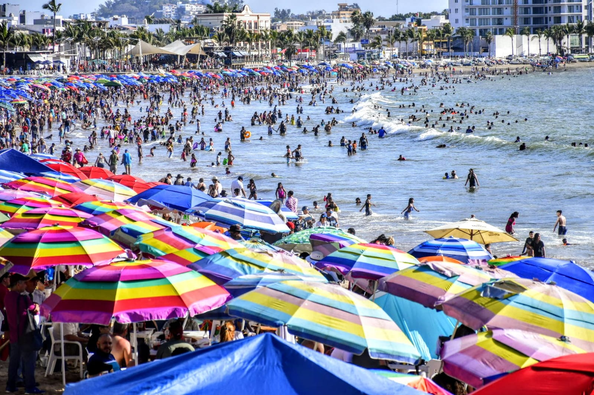

Mazatlán: Semana santa

La Pascua es una celebración católica y es una fiesta en México, que es un país mayoritariamente católico. La mayoría de los mexicanos tendrán algunos días hasta una semana completa sin trabajar para celebrar. Esto permite a las personas poder viajar y uno de los puntos preferidos es el puerto de Mazatlán.
La Semana Santa en Mazatlán es un torbellino caleidoscópica de imágenes, sonidos, olores y, por supuesto, sol. Las playas están llenas de gente de todas las edades procedentes de un número sorprendente de nacionalidades, la cerveza es fluida y la música llena el aire.